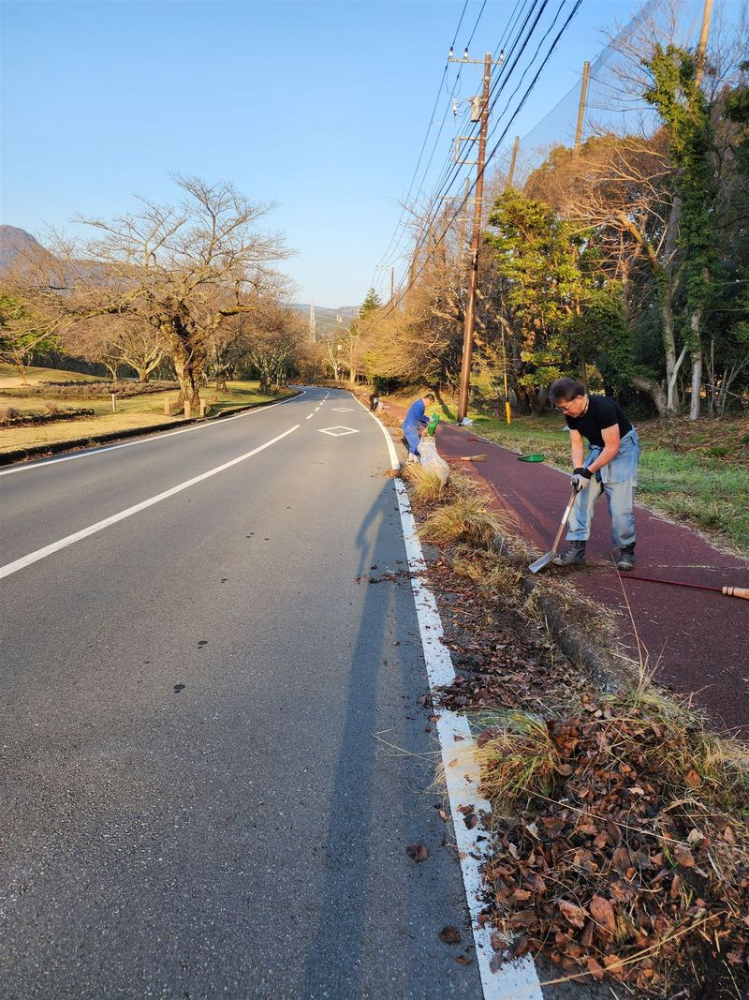
綺麗なまちを、
後世へ。
Clean Vibes（クリーンバイブス）は、伊東市で、市民の手でまちの美化と雑草対策に取り組んでいます。
Clean Vibesとは
2022年4月、伊東のオレンジビーチで活動を始めました。
道路や歩道、公園の駐車場など、毎日の暮らしで使う場所を、自分たちの手できれいにする。土日祝の早朝に集まり、草を取り、側溝を掃除し、消えかけた白線を引き直してきました。活動は累計500回以上になります（2026年10月時点）。
目指しているのは、自分たちのまちを自分たちで守ることが、市民にとって当たり前の文化になることです。2030年、このやり方を届けきったら、団体としての役目を終えると決めています。
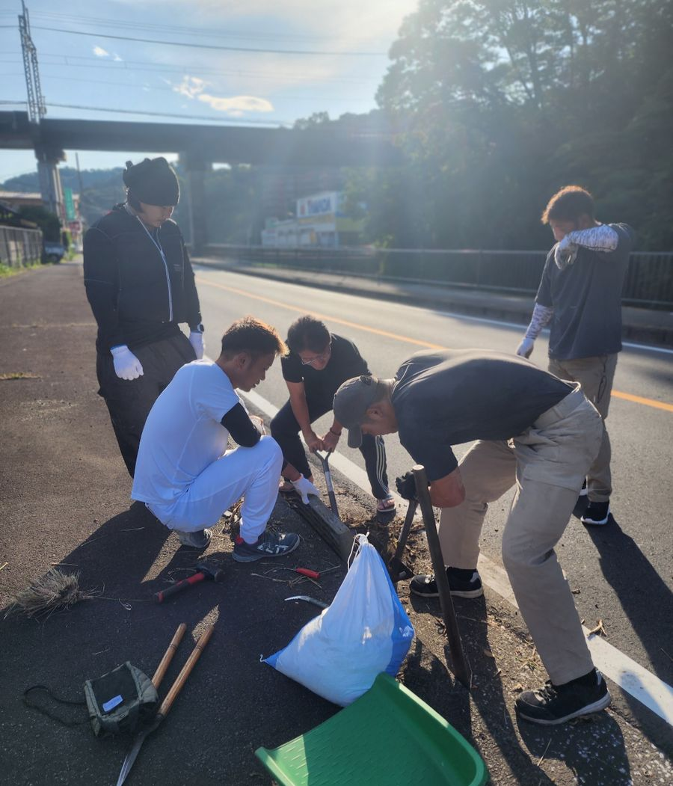
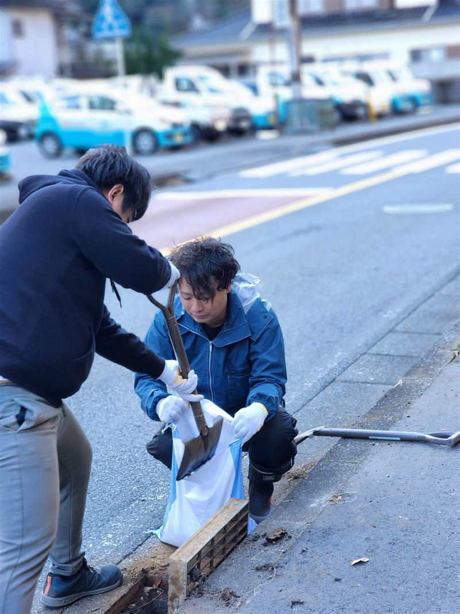
活動内容
草は取っても、しばらくするとまた生えてきます。そこで私たちは、草を取る「除草」だけでなく、雑草が生えにくい状態をつくる「防草」まで行っています。
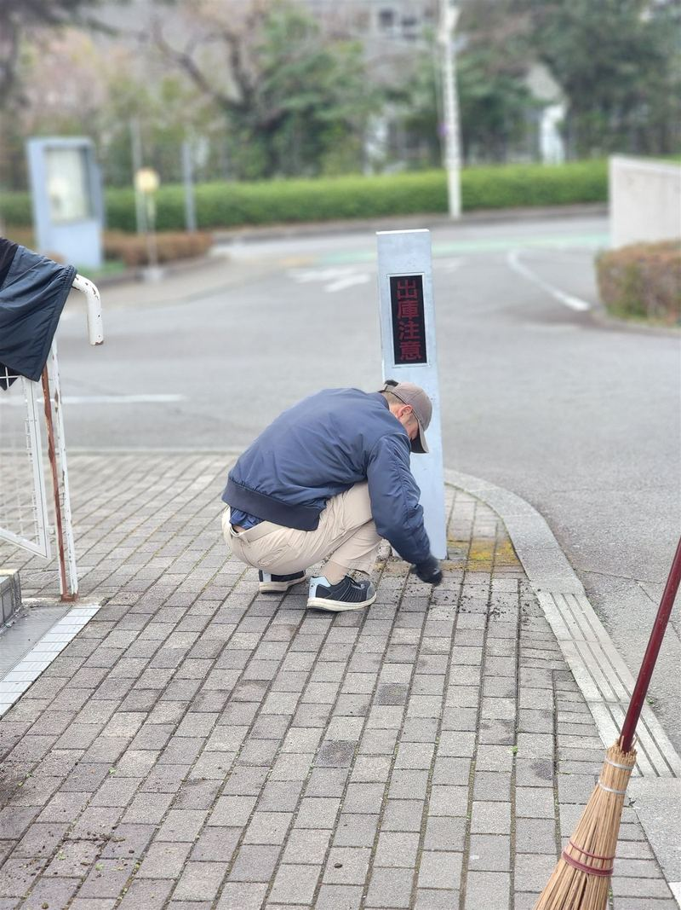
除草・防草
草を根から取り除き、目地や隙間を固まる砂で埋めて、雑草が生えにくい状態にします。
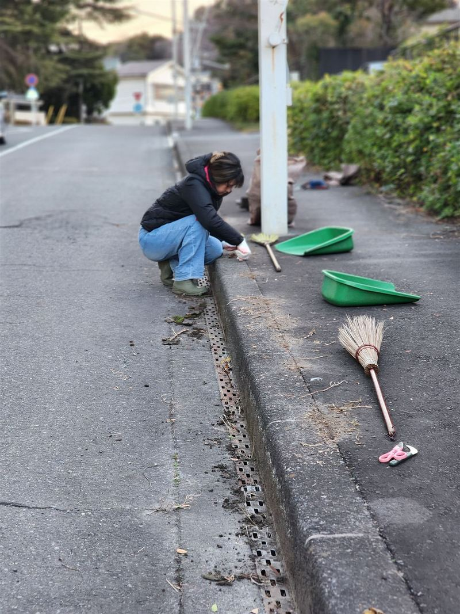
側溝の清掃
側溝にたまった泥や落ち葉を取り除きます。
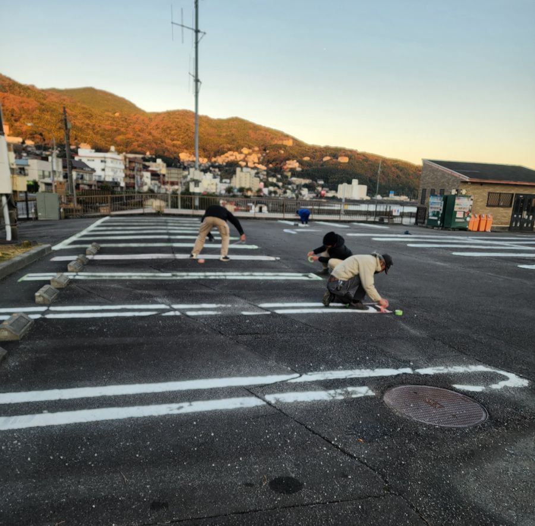
駐車場の白線
なぎさ公園の駐車場で100台分以上、一碧湖の駐車場では市の観光課と協力して、消えかけた白線を引き直しました。
このほか、歩道の柵の塗装や、地域の高校生・子どもたちと一緒の清掃にも取り組んでいます。
防草の方法
私たちが作業するのは、子どもやペットも行き交う道や公園です。雨が降れば、水は側溝から海へと流れていきます。だから、除草剤は使いません。5つの工程で、雑草が生えにくい状態をつくります。
ほじる
草を根ごと取り除きます。表面の土に残った根や種も、できるだけ一緒に取ります。
掃く
取り除いた土や草を掃き集め、地面をきれいにします。
焼く
残った草に火を短時間当て、熱で弱らせます。火を使うため、経験者が担当し、消火の準備をしてから行います。
埋める
目地や隙間を、水で固まる砂や土で埋めます。場所に合わせて材料を使い分けています。
まく検証中
セスキ炭酸ソーダを水に溶かしたアルカリ水をまきます。効果を確かめている途中の工程です。
使っている道具
①ほじる
- いちばんの相棒草取り一番清水製作所 モンブラン太い根も細かい根も絡め取り、狭い隙間までしっかりほじれます。この道具なしに、Clean Vibesの「ほじる」はありえません。
- 根こそぎ草抜き千吉 SGJ-10細かい根を取ります。
- パワーグリップ付草取り千吉 SGT-16PW頑固な根を、力を入れてほじるときに使います。
②掃く
- 仕上がりを決める外苑ほうきアズマ工業 名匠168活動を始めた頃から使い続けているほうきです。コシが強く、溝の奥の砂や土までしっかりかき出せます。
- 手箕（てみ）千吉 ECOテミ 小集めた砂や草をすくいます。土のう袋やガラ袋に入れやすい大きさです。
③焼く
- ガスバーナーガスは、地元企業の株式会社マルヰエナジー様からご提供いただいています。
④埋める
- 始まりの原点雑草ストッパーカインズ ハード 速乾オレンジビーチの約800mの歩道は、これで施工しました。
- マサファルト水で固まる自然土大室山・さくらの里周辺で使っています。
- 散水パッチMATERAN歩道やアスファルトで使っています。
⑤まく
- セスキ炭酸ソーダニチガ水に溶かして、アルカリ水をつくります。
全体のおよそ8〜9割で、雑草を防げています
防草の施工は、オレンジビーチの歩道から始まりました。約800mの歩道を、カインズの「雑草ストッパー」（水で固まる砂）で施工した結果です。完璧ではないからこそ、何度でも手入れに通います。
モルタルを使った防草検証中
2026年11月から、モルタルを使った防草の実証実験を始めました。効果はこれから確かめます。
この方法をほかの場所で行うときは、必ず管理者の許可を得てください。火を使う工程は、経験のある人が担当してください。
参考にしている研究
- 雑草の多くは、地表近くの浅いところから芽を出す（du Croix Sissons ほか、2000年、Weed Science 48巻）
- 火を当てたときの効き方は、草の種類や育ち具合で大きく変わる（Ascard、1995年、Weed Research 35巻）
- 舗装された場所では、いくつかの方法の組み合わせや、雑草が生えにくい舗装が有効（Rask & Kristoffersen、2007年、Weed Research 47巻）
参加方法
伊東市内で、主に土日祝の早朝に活動しています。
初めての方、親子、観光で来られた方も歓迎です。
- STEP 1
活動カレンダーを見る
日時と場所は毎回変わります。Instagramの「活動カレンダー」でお知らせしています。
活動カレンダーを見る - STEP 2
InstagramのDMで申し込む
「参加希望日・お名前・人数」を、InstagramのDMでお送りください。
DMで申し込む - STEP 3
当日、軍手を持って参加
持ち物は軍手だけで大丈夫です。道具はある程度こちらで用意します。
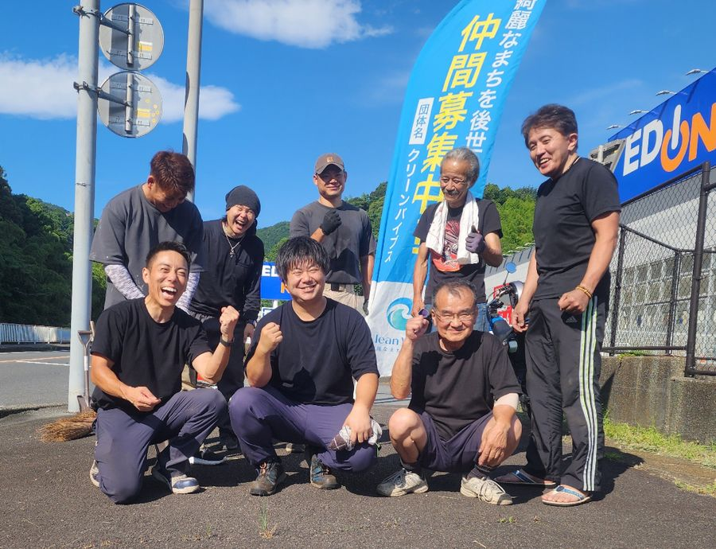
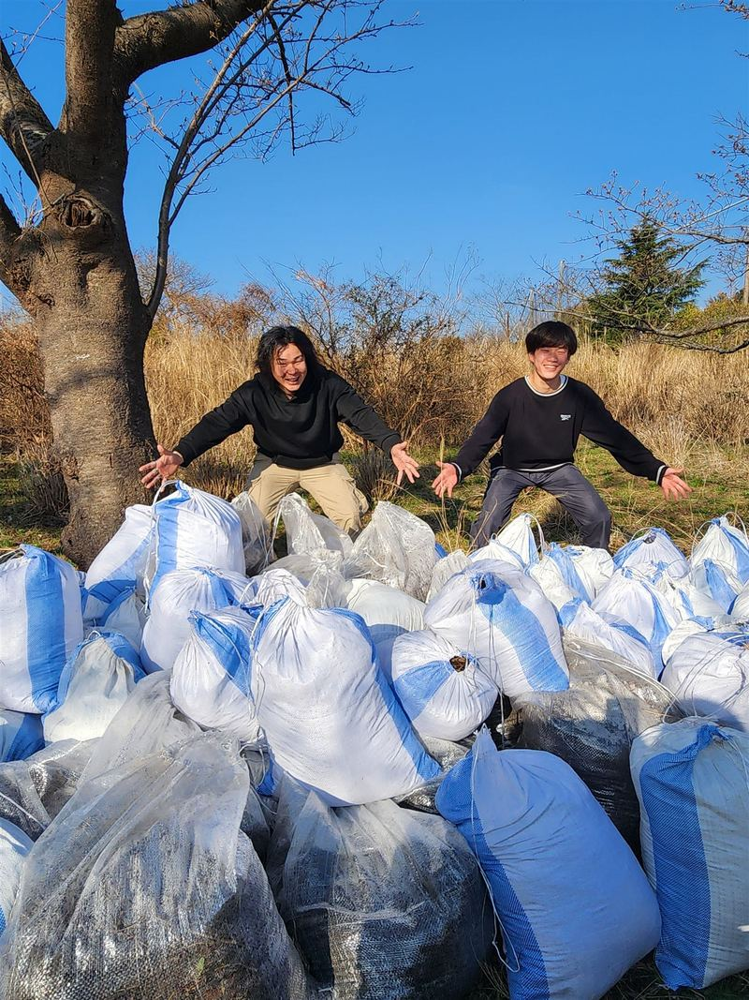
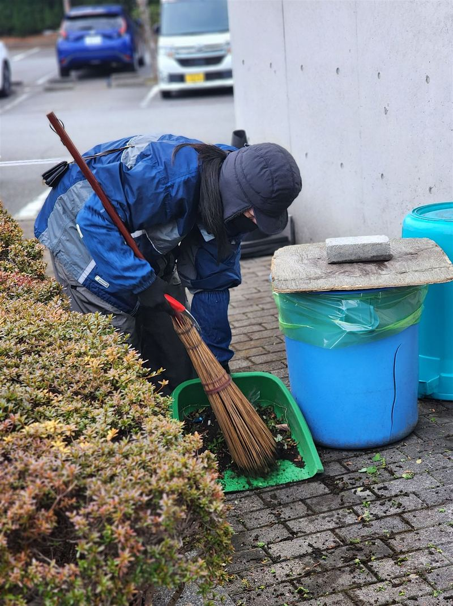
実績
静岡県道路利用者会議 会長表彰
令和7年度の道路愛護優良団体表彰で、公共施設の清掃活動について感謝状をいただきました（2025年9月11日）。
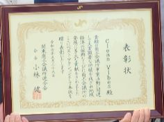
関東商工会議所連合会 ベスト・アクション表彰
なぎさ公園駐車場の白線の引き直しや除草など、まちづくりへの貢献を評価していただきました（2025年）。
しずおかアダプトロード・プログラム
伊東市、静岡県熱海土木事務所と同意書を取り交わし、国道135号の湯川交差点〜なぎさ公園の約1kmで、清掃や除草を行っています。
伊豆新聞
- 「国道135号美化へ協働」
- 「歩道の柵 美しく」
- 「駐車場白線引き完了」
- 「クリーンバイブス関東会長賞」
これまでの歩み
- 2022年4月伊東のオレンジビーチで活動を始める
- 2024年しずおかアダプトロード・プログラムの同意書を取り交わす
- 2025年関東商工会議所連合会 ベスト・アクション表彰
- 2025年度セブン-イレブン記念財団「環境市民活動助成」
- 2025年9月静岡県道路利用者会議 会長表彰
- 2026年10月時点活動が累計500回以上に
- 2026年11月モルタルを使った防草の実証実験を開始
- 2030年（目標）このやり方を届けきって解散
活動を支援する
活動には、道具や資材が欠かせません。いただいたご支援は、防草の資材や道具の購入に大切に使います。企業・団体の皆さまからの協賛も歓迎しています。
道具や資材は、Amazonの「ほしい物リスト」からもご支援いただけます。
これまでに物品や資材でご支援くださった皆さま、本当にありがとうございます。
活動を支えてくださる伊東市内の企業
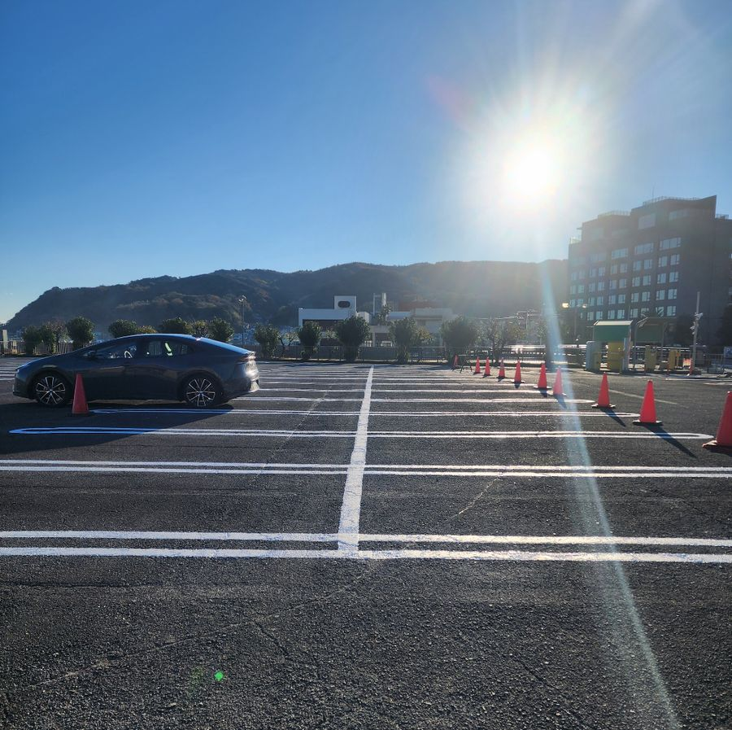
団体概要
- 団体名
- Clean Vibes（クリーンバイブス）
- テーマ
- 綺麗なまちを後世へ
- 活動開始
- 2022年4月（伊東のオレンジビーチから）
- 拠点
- 静岡県伊東市
- 活動日時・場所
- 主に土日祝の早朝、伊東市内の各所（日時・場所は毎回変わります。Instagramの「活動カレンダー」でお知らせしています）
- 活動回数
- 累計500回以上（2026年10月時点）
- 表彰
- 静岡県道路利用者会議 会長表彰（令和7年度）
関東商工会議所連合会 ベスト・アクション表彰（2025年） - 助成
- セブン-イレブン記念財団 2025年度「環境市民活動助成」
- 行政との協働
- しずおかアダプトロード・プログラム（国道135号 湯川交差点〜なぎさ公園の約1km）
- 連絡先
- InstagramのDM：@clean_vibes_ito
メール（代表 大竹）：ka@oh-life.co.jp
お問い合わせ
活動へのご参加、自分のまちで始めたい方のご相談、支援・協賛、取材などのお問い合わせは、次のどちらかでご連絡ください。